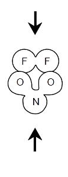

COLLISION
COLLISION

Consider the following collisions, each occurring at the same temperature:
| COLLISION ONE | ||
|---|---|---|
| BEFORE COLLISION |
COLLISION | AFTER COLLISION |
| COLLISION TWO | ||
|---|---|---|
| BEFORE COLLISION |
COLLISION | AFTER COLLISION |
|  |
|
|
Which one of the following factors explains why collision one is successful while collision two is not successful?